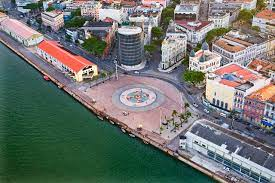

Marco Zero - Recife
Se você está planejando uma visita a Recife, capital de Pernambuco, não pode deixar de conhecer o Marco Zero, um dos pontos turísticos mais emblemáticos da cidade.
O Marco Zero está localizado no centro histórico de Recife, na Praça Rio Branco, e é considerado o ponto de partida para medir as distâncias das cidades pernambucanas.
Hoje em dia, o Marco Zero é um dos principais pontos de encontro dos recifenses, que se reúnem ali para apreciar a vista do Rio Capibaribe, fazer passeios de barco ou simplesmente relaxar em um dos bancos da praça.
Para os turistas que visitam Recife, o Marco Zero é um passeio imperdível. Além de ser um lugar bonito e tranquilo, é possível encontrar ali diversas opções de lazer e cultura.
É possível visitar o Paço do Frevo, um museu dedicado ao ritmo musical típico de Pernambuco, ou ainda o Museu Cais do Sertão, que conta a história da cultura nordestina.
Se você gosta de gastronomia, o Marco Zero também é uma excelente opção. Nas redondezas é possível encontrar diversos restaurantes que servem pratos típicos da culinária pernambucana.
Em resumo, o Marco Zero é um lugar cheio de história, cultura e lazer que merece ser visitado por todos os turistas que vão a Recife. Não deixe de incluir esse passeio em seu roteiro e se encante com as belezas e riquezas culturais da cidade.